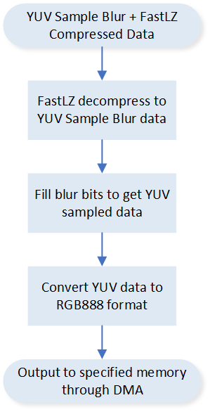

IDU
Sample List
This chapter introduces the details of the IDU sample code. The RTL87x2G series provides the following samples for the IDU peripheral.
Functional Overview
The IDU defines a compressed file format that includes compression algorithm, compression parameters, raw pixel information, compressed pixel addresses, and compressed pixel data. Raw image data must be compressed using supported algorithms to generate compressed files that conform to the specified file format.
These compressed files can then be stored in memory devices such as NAND flash or NOR flash before the embedded system starts running. The main advantage is that compressed files have significantly smaller sizes compared to raw images, thus save memory space and lower down cost.
2 GDMA channels are required for data transmission: one GDMA channel transfers the compressed image data from memory to the IDU RX FIFO, after which IDU decompresses this data and temporarily stores the decompressed data in the IDU TX FIFO. Another GDMA channel transfers the decompressed data from TX FIFO to memory. Since uncompressed data is usually larger than the compressed file, sometimes the IDU not only saves storage space but also accelerates the pixel reading process compared to directly reading uncompressed data from memory.
Feature List
Support RLE decompress.
Support FastLZ decompress.
Support YUV sample decode with data blur.
Support region of interest.
Interrupt or polling mode operation.
FIFO depth: 16.
FIFO width: 32 bits.
Algorithm
IDU supports 3 different compression algorithms: RLE, FastLZ, and YUV. Each of them might have different compress ratio for the same image, which requires user to check different configurations of each compress algorithm to find the most proper compress algorithm for each image.
RLE
RLE (Run-length encoding) is a lossless compression algorithm in which consecutive identical data is stored as single data value and data number. It can decrease the file size enormously, especially for simple graphic images such as icons, line drawings and animations. For files that do not have many consecutive identical data, RLE might increase the file size.
FastLZ
FastLZ is an ANSI C/C90 implementation of Lempel-Ziv 77 algorithm (LZ77) of lossless data compression. The raw pixel data of each picture line is compressed into blocks which are called instructions. IDU supports three kinds of instructions which are literal run, short match and long match. FastLZ can decrease the file size enormously, especially for simple graphic images such as icons, line drawings and animations. For files that do not have many consecutive identical byte, FastLZ might increase the file size.
YUV
YUV is the color model found in the PAL analogue color TV standard (excluding PAL-N). A color is described as a Y component (luma) and two chroma components U and V. Today, the term YUV is commonly used in the computer industry to describe color spaces that are encoded using YCbCr. YUV Sampling is a lossy compress algorithm which contain three steps. First, RGB color format are converted into YUV color format. Then each component in YUV color format are sampled and re-combined. Finally, the least significant bits of each byte can be cancelled and the rest bits are re-combined. Besides, FastLZ compression can be performed on YUV sampled data for further reduction of data size. Sample procedure is shown in the figure below:

YUV Sample Compression and Decompression Procedure
Interrupt
IDU has 2 different interrupts to support firmware processing, which are decompress finish interrupt and decompress error interrupt.
Decompress Finish Interrupt
IDU decompress finish interrupt would be triggered when whole decompress procedure of IDU has been finished and all pixel data has been transferred to Destination. This interrupt always indicates the end of the decompress procedure.
Decompress Error Interrupt
IDU decompress error interrupt would be triggered when error has been caused in decompress procedure. The error would occur when less or more data are saved into TX FIFO than expected after a line decompress procedure. If the internal buffer of IDU, RX FIFO or TX FIFO is not empty after the whole frame decompress procedure, the error would also be reported.
Decompression
The API IDU_Decode() implements data decompression function by simply inputting address of compressed data and range of interest. Decompression result will also be reported.
Troubleshooting
Decompression Error Handling
When IDU detects error during decompressing, it will stop working and reset itself to inactive state. Meanwhile, GDMA channels which take responsibility to transmit data will be suspended and their operation will be aborted. As mentioned in IDU Decompress Error Interrupt, error usually occurs when less or more data are saved into TX FIFO than expected after a line decompress procedure. As a result, even if the decompress procedure has been aborted, data more than expected may have been transmitted to memory and causes memory corruption, which leads to system fault and hang. Thus, it's important to ensure raw compressed data is correct.
See Also
Please refer to the relevant API Reference: